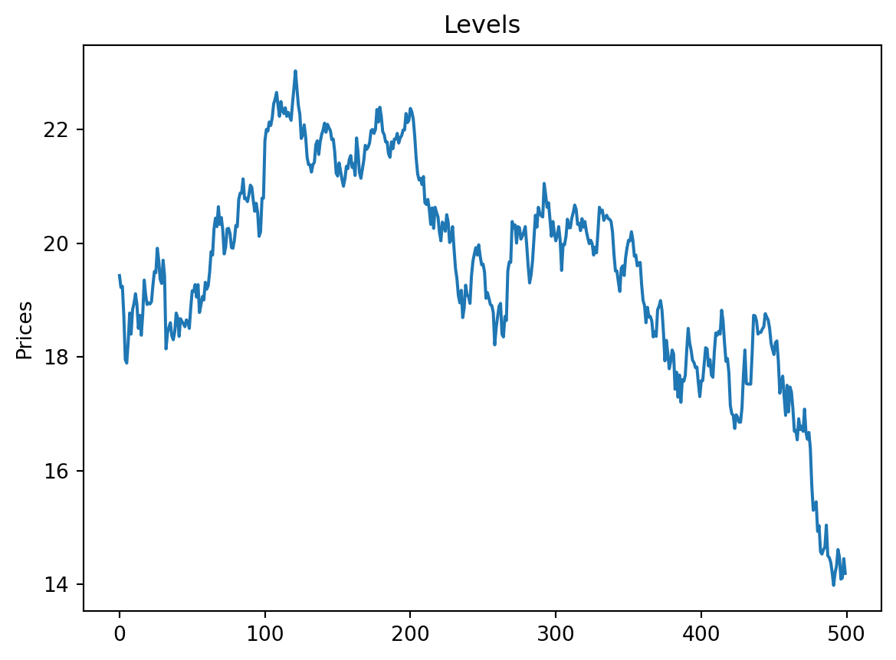
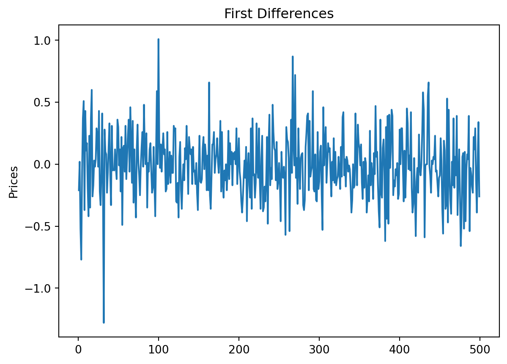
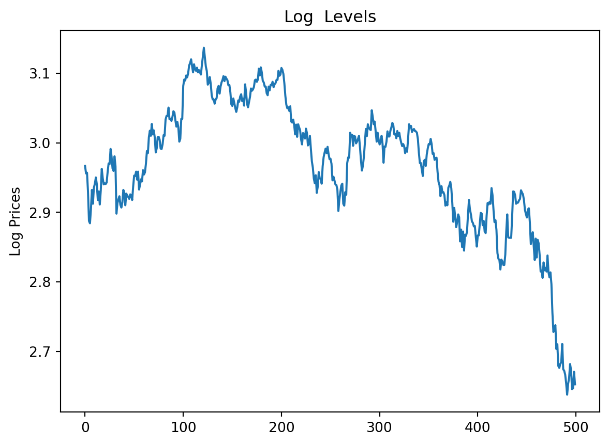
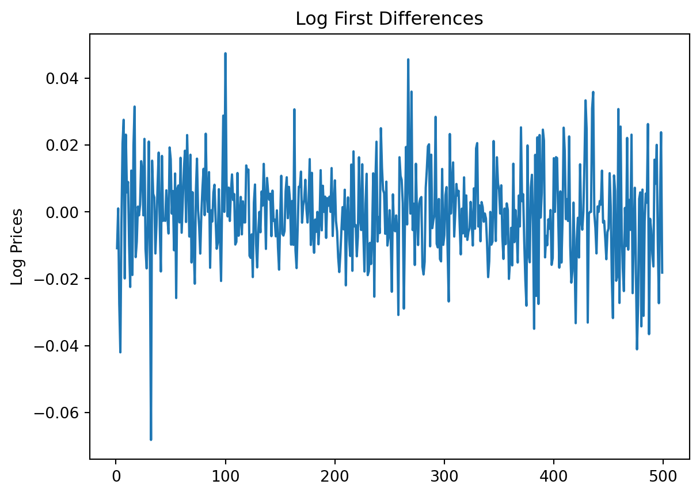
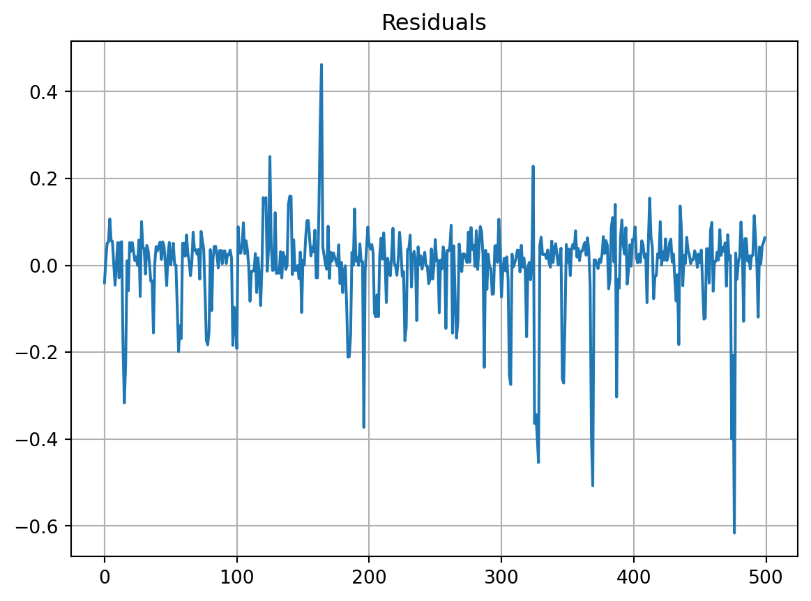
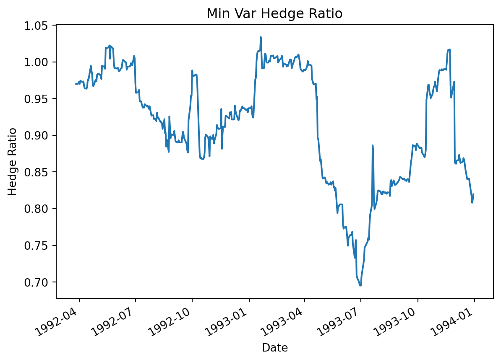

Code
import pandas as pd
import numpy as np
from scipy import stats
import statsmodels.api as sm
from statsmodels.tsa.stattools import adfuller, coint
import matplotlib.pyplot as plt
df = pd.read_csv('WTI-Prices-1992-to-1993.csv')
print("Levels")
adf_test = adfuller(df['Spot'])
print('ADF Stat: %f' % adf_test[0])
levels_p = adf_test[1]
print('p_value: %f' % levels_p)
print("\nFirst Price Differences")
diff = df['Spot'].diff()
adf_test = adfuller(diff.dropna())
print('ADF Stat: %f' % adf_test[0])
diff_p = adf_test[1]
print('p_value: %f' % diff_p)
print("\nLog Prices - Levels")
log_prc = np.log(df['Spot'])
adf_test = adfuller(log_prc)
print('ADF Stat: %f' % adf_test[0])
log_levels_p = adf_test[1]
print('p_value: %f' % log_levels_p)
print("\nLog Prices - Differences")
diff = log_prc.diff().dropna()
adf_test = adfuller(diff)
print('ADF Stat: %f' % adf_test[0])
log_diff_p = adf_test[1]
print('p_value: %f' % log_diff_p)
# My results
print("""
Levels: Since the P Value is so high, I conclude that we fail to reject the null hypothesis of a unit root. In other words, the levels in this time series contain a unit root and are non-stationary.
""")
print("""
First Price Differences: Since the P Value is 0 we can reject the null hyptothesis and I conclude the First Price Differences do not contain a unit root and are stationary time sets.
""")
print("""
Log Levels: Even after changing to log the P Value stays high, this again means that we can fail to reject the null hyptothesis and I continue to conlude that the log levels containa unit root and are non-stationarity.
""")
print("""
Log First Differences: P value still stays at 0 meaning we continue to strongly reject the null hypothesis. I also continue to conclude that the log of first differences does not contain a unit root and are stationary time sets.
""")
print("""
For time series data it does not suprise me too much, with most time series data it is stochastic, however when we take differences in price levels, because of random walk and mean reversion I expect the difference to all make the data stationary.
""")
# Time Series Plots
print("TIME SERIES PLOTS:")
# Price levels
plt.plot(df['Spot'])
plt.title('Levels')
plt.ylabel('Prices')
plt.show()
# First differences
diff = df['Spot'].diff()
plt.plot(diff)
plt.title('First Differences')
plt.ylabel('Prices')
plt.show()
# Log prices
log_prices = np.log(df['Spot'])
plt.plot(log_prices)
plt.title('Log Levels')
plt.ylabel('Log Prices')
plt.show()
# Log first diffs
log_diff = np.log(df['Spot']).diff()
plt.plot(log_diff)
plt.title('Log First Differences')
plt.ylabel('Log Prices')
plt.show()
#Engle Granger
# regression
# Y_t = a + Bx_t + u_t
N = len(df)
y = df['Spot']
x = df['Futures']
reg = stats.linregress(x, y)
uhat = y - reg.intercept - reg.slope * x
residuals = pd.Series(uhat)
results = adfuller(uhat)
print('ADF: %f | P Value: %f' % (results[0], results[1]))
residuals.plot(grid = True)
plt.title("Residuals")
# plt.show()
print("As visible from the residuals plot, we can see that the data is relatively stationary, focused pretty tightly on the mean. Because of this mean reversion we can conclude that the residuals are cointegrated by following a constant mean pattern. Mean reversion is visibly prominent in this plot, and we can see a few extreme data points, but it is a tight cointegration.")
plt.show()
# minimum variance hedge ratio
# h* = (p * o_s)/o_f
# h* = min var hedge ratio
# p = corr coefficient spot price change futures price change
# o_f = std dev future
# o_s = std dev spot
df = pd.read_csv('WTI-Prices-1992-to-1993.csv', parse_dates = ['Date'])
spotChanges = df['Spot'].diff()
futureChanges = df['Futures'].diff()
ratios = []
days = 60
for i in range(days, len(df)):
spotWindow = spotChanges.iloc[i - days:i]
futureWindow = futureChanges.iloc[i - days:i]
cov = spotWindow.cov(futureWindow)
var = futureWindow.var()
hr = cov / var
ratios.append(hr)
hrSeries = pd.Series(ratios, index = df.loc[days:].Date)
hrSeries.plot()
plt.title("Min Var Hedge Ratio")
plt.xlabel("Date")
plt.ylabel("Hedge Ratio")
print("It is visible by the Min Var Hedge Ratio plot that the minimum variance hedge ratio is not very stable as it fluctuates quite a bit over the time series.\nThe data does seem pretty consistent on the ratio of 1, but we also have large large declines in the middle fo the year 1993.\nBecause of such large spikes is a little worrisome to be consistent for long periods of time and with such instability there is a lot of risk involved. ")
plt.show()Levels
ADF Stat: -0.280351
p_value: 0.928241
First Price Differences
ADF Stat: -22.470295
p_value: 0.000000
Log Prices - Levels
ADF Stat: 0.024364
p_value: 0.960501
Log Prices - Differences
ADF Stat: -22.623511
p_value: 0.000000
Levels: Since the P Value is so high, I conclude that we fail to reject the null hypothesis of a unit root. In other words, the levels in this time series contain a unit root and are non-stationary.
First Price Differences: Since the P Value is 0 we can reject the null hyptothesis and I conclude the First Price Differences do not contain a unit root and are stationary time sets.
Log Levels: Even after changing to log the P Value stays high, this again means that we can fail to reject the null hyptothesis and I continue to conlude that the log levels containa unit root and are non-stationarity.
Log First Differences: P value still stays at 0 meaning we continue to strongly reject the null hypothesis. I also continue to conclude that the log of first differences does not contain a unit root and are stationary time sets.
For time series data it does not suprise me too much, with most time series data it is stochastic, however when we take differences in price levels, because of random walk and mean reversion I expect the difference to all make the data stationary.
TIME SERIES PLOTS:
ADF: -11.993263 | P Value: 0.000000
As visible from the residuals plot, we can see that the data is relatively stationary, focused pretty tightly on the mean. Because of this mean reversion we can conclude that the residuals are cointegrated by following a constant mean pattern. Mean reversion is visibly prominent in this plot, and we can see a few extreme data points, but it is a tight cointegration.
It is visible by the Min Var Hedge Ratio plot that the minimum variance hedge ratio is not very stable as it fluctuates quite a bit over the time series.
The data does seem pretty consistent on the ratio of 1, but we also have large large declines in the middle fo the year 1993.
Because of such large spikes is a little worrisome to be consistent for long periods of time and with such instability there is a lot of risk involved. 




